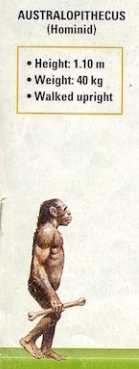
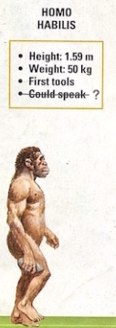
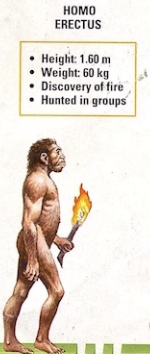
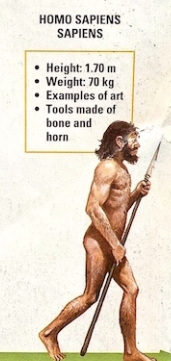
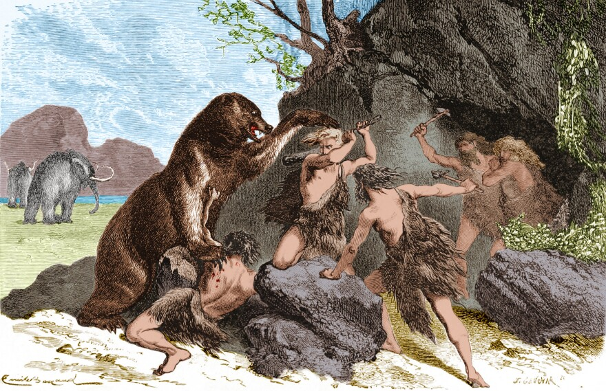
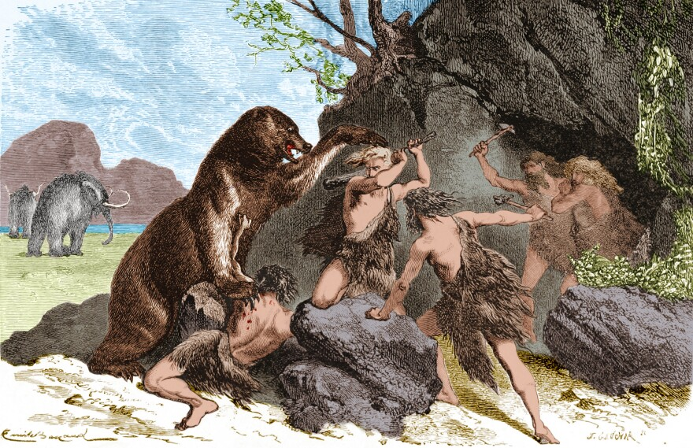

 

rock art, drawing, painting, or similar work on or of stone, usually from the ancient or prehistoric era, though it continued to be practiced in some areas of Africa during the 19th century and possibly later. Rock art includes pictographs (drawings or paintings), petroglyphs (carvings or inscriptions), engravings (incised motifs), petroforms (rocks laid out in patterns), and geoglyphs (ground drawings). The ancient animals, tools, and human activities depicted often help shed light on daily life in the distant past, though the images are frequently symbolic rather than representative.
To early humans, hunting was a necessity. The quarry provided not only food from the meat but also clothing from the skins, as well as material for tools from the bones, horns, and hooves. Both archaeological evidence from the past and observation of simpler societies of the present show widespread preoccupation with, and ingenuity in, methods of hunting. These varied, and vary, with the nature of the terrain, the animal hunted, the ingenuity and inventiveness of the hunters, and the materials and technologies at their disposal. Weapons ranged upward in intricacy and effectiveness from sticks and stones used to kill birds and small game to specially shaped clubs and throwing sticks such as the African knobkerry, the trombash of the Upper Nile, and the Australian boomerang; to spears ranging from simple pointed sticks to those with a separate foreshaft, usually barbed, and armed with heads of sharpened stone, bone, or metal. Except in Australia, bows and arrows were universal among early hunters and were revived by modern hunters in the 19th century. The blowpipe, or blowgun, with its poisoned darts, is one of the hunter’s deadliest weapons.
Human Evolution